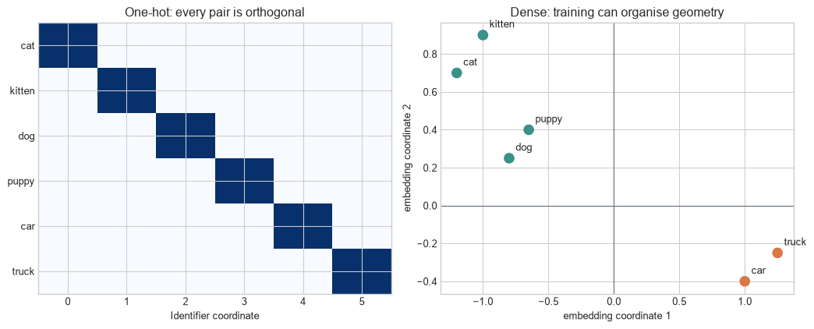
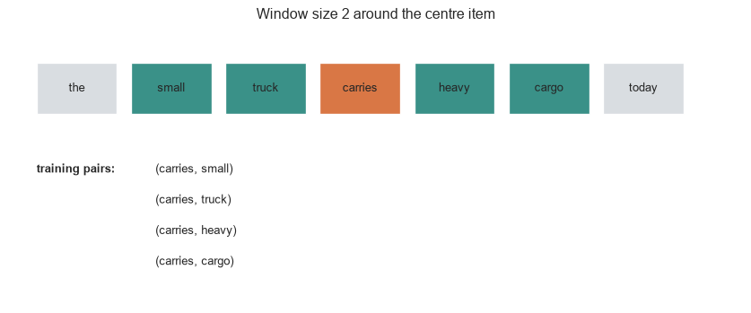
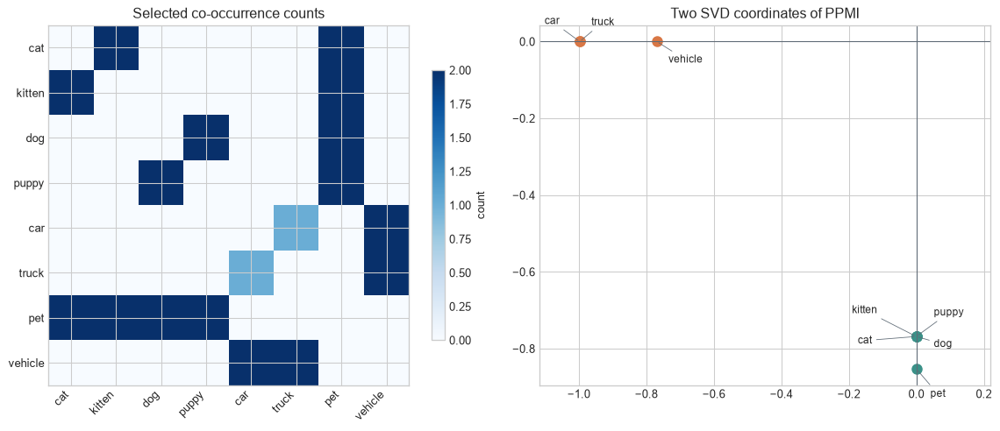
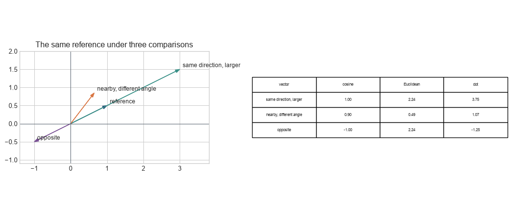
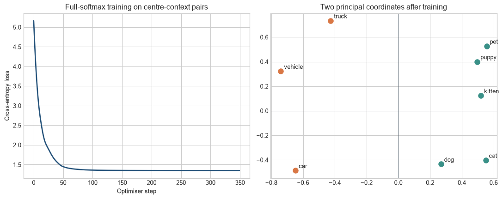

Learning vector coordinates for discrete items and contexts
The problem
Chapter 16 established that a representation needs both numerical values and a clear account of what those values stand for. A word type, product identifier, diagnosis code, or graph node is a category, not a measured quantity. An integer identifier makes the category easy to look up, but it creates a false numerical order: identifier 20 is not twice identifier 10, and adjacent identifiers need not be related.
An embedding replaces that identifier with a learned vector. Later layers can take dot products, compare distances, and apply transformations to the vector. The coordinates are fitted from an objective and a dataset, so their geometry records the regularities that the training procedure rewards. It is not an authoritative map of meaning.
A small corpus makes the lookup visible
The chapter uses a small constructed corpus containing animal and vehicle terms. Its purpose is to make co-occurrence counts, context windows, and fitted vectors inspectable. Results from this corpus illustrate mechanics; they do not provide evidence about natural-language semantics.
Figure 18.1: An item identifier selects one row from a shared embedding matrix; the identifier itself does not enter later calculations as a magnitude.
The highlighted row is shared wherever the identifier 3 occurs. During training, gradients can change that row. The ordering of rows is an implementation choice; permuting the vocabulary and applying the same permutation to the matrix leaves the represented relationships unchanged.
Embedding. A learned vector representation for a discrete item. An embedding matrix maps identifiers to coordinates; similarity between vectors is evidence about the training relation and task, not an intrinsic meaning.
Level 1 - Intuition
Identifiers name items but do not describe them
Suppose cat, kitten, and truck receive identifiers 0, 1, and 5. The identifiers allow an array lookup. Treating them as a numerical feature would imply that truck is farther from cat than kitten is and that differences between identifiers carry stable meaning. A different vocabulary ordering would change those conclusions without changing the items.
A one-hot representation removes this false order. With six items, puppy can be represented as
\[
[0,0,0,1,0,0].
\]
Every distinct pair of one-hot vectors is equally distant and orthogonal. One-hot vectors identify items faithfully but contain no learned notion of similarity and grow with the vocabulary.
Dense vectors make relationships learnable
An embedding replaces the length-\(V\) one-hot vector with a length-\(D\) dense vector, commonly with \(D\ll V\). The coordinates are parameters. An objective changes them so that vectors become useful for prediction, retrieval, ranking, or another downstream calculation.
Code
one_hot=np.eye(len(items))fig,axes=plt.subplots(1,2,figsize=(11,4.5))axes[0].imshow(one_hot,cmap="Blues",vmin=0,vmax=1,aspect="auto")axes[0].set_yticks(range(len(items)),items); axes[0].set_xticks(range(len(items)),range(len(items)))axes[0].set_xlabel("Identifier coordinate"); axes[0].set_title("One-hot: every pair is orthogonal")points=np.array([[-1.2,.7],[-1.0,.9],[-.8,.25],[-.65,.4],[1.0,-.4],[1.25,-.25]])colours=[teal]*4+[orange]*2axes[1].scatter(points[:,0],points[:,1],c=colours,s=85)for name,(x,y) inzip(items,points): axes[1].text(x+.05,y+.04,name)axes[1].axhline(0,color=grey,linewidth=.8); axes[1].axvline(0,color=grey,linewidth=.8)axes[1].set_xlabel("embedding coordinate 1"); axes[1].set_ylabel("embedding coordinate 2"); axes[1].set_title("Dense: training can organise geometry")plt.tight_layout(); plt.show()

Figure 18.2: One-hot vectors separate identifiers uniformly, while dense embeddings can place items used in related contexts near one another.
The right-hand geometry is illustrative. A real embedding does not begin with labels such as “animal direction” or “vehicle direction”. Regularities emerge only to the extent that the data and objective reward them.
An embedding is a table and a learned representation
The embedding table is a parameter matrix with one row per item. Lookup is the operation that retrieves a row. The retrieved row is the item’s representation at that interface. A downstream network can then combine, transform, or compare it.
This distinction prevents two errors. First, lookup itself does not infer meaning; the training objective determines how rows change. Second, a vector being near another vector does not establish that the items are interchangeable. Similar contexts can reflect synonymy, shared topic, grammatical role, opposition, or a dataset-specific association.
It ignores overall magnitude. Euclidean distance measures the length of \(x-y\) and therefore depends on both direction and norm. Dot products also depend on both. The suitable measure follows from the training objective and downstream use; no metric recovers a unique semantic truth from the coordinates.
Static embeddings collapse contexts
A static embedding table gives one vector to each vocabulary item. The word bank receives the same row in a sentence about a river and a sentence about finance. A contextual model instead produces a vector from the item and its surrounding sequence, so the two occurrences can differ.
Figure 18.3: A static table returns one vector for every occurrence of an item, while contextual representations can separate occurrences according to their surrounding sequence.
Contextual representations require a sequence model to combine information across positions. This chapter examines the resulting distinction but leaves recurrent architectures, attention, and Transformers to Chapters 18–23.
Level 1 has established lookup, dense geometry, and context dependence. Level 2 follows how training examples change the table.
Level 2 - Mechanics
Context windows turn sequences into training pairs
Predictive word-embedding methods construct examples from nearby items. With a window of two positions, the centre item at position \(t\) is paired with items at \(t-2\), \(t-1\), \(t+1\), and \(t+2\), where available.
Code
tokens=["the","small","truck","carries","heavy","cargo","today"]centre=3; window=2fig,ax=plt.subplots(figsize=(11,4.2)); ax.axis("off")for i,token inenumerate(tokens): colour=orange if i==centre else (teal ifabs(i-centre)<=window else"#d9dde1") ax.add_patch(Rectangle((.4+i*1.35,2.5),1.15,.7,facecolor=colour,edgecolor="white")) ax.text(.975+i*1.35,2.85,token,ha="center",va="center")context_indices=[i for i inrange(len(tokens)) if0<abs(i-centre)<=window]for row,i inenumerate(context_indices): ax.text(2.1,1.7-row*.42,f"(carries, {tokens[i]})",fontsize=10)ax.text(.4,1.7,"training pairs:",fontsize=10,fontweight="bold")ax.set_xlim(0,10.5); ax.set_ylim(-.1,3.7); ax.set_title("Window size 2 around the centre item"); plt.show()

Figure 18.4: A context window converts one sequence into centre-context pairs; changing the window changes which relationships training rewards.
A narrow window emphasises local syntactic and functional relations. A wider window includes more topical association. Corpus boundaries, sentence segmentation, subsampling, and the definition of context all change the pairs before optimisation begins.
Positive and negative pairs create a contrast
For a positive pair such as (carries, cargo), training raises a compatibility score. Computing a full probability over a large vocabulary can be expensive. Negative sampling instead draws items that did not occur in the selected context and lowers their scores. Mikolov et al. (2013) introduced this training approach for the skip-gram model together with frequent-word subsampling.
Two tables are commonly maintained: input vectors for centre items and output vectors for context items. A positive pair updates the selected rows from both tables. Negative examples update their context rows. Rows absent from the batch receive no direct gradient in that update.
Repeated updates organise neighbourhoods
The running corpus is constructed from sentences such as cat is a pet, kitten is a young cat, truck carries cargo, and car carries people. Co-occurring items do not need to be synonyms. truck and cargo may become associated because one predicts the other; cat and kitten may become similar because they share contexts.
Code
corpus=[ ["cat","pet","soft"],["kitten","pet","soft"],["dog","pet","loyal"],["puppy","pet","loyal"], ["cat","kitten","pet"],["dog","puppy","pet"],["car","vehicle","road"],["truck","vehicle","road"], ["car","carries","people"],["truck","carries","cargo"],["car","truck","vehicle"], ["kitten","young","cat"],["puppy","young","dog"]]focus=["cat","kitten","dog","puppy","car","truck","pet","vehicle"]all_terms=sorted({term for sentence in corpus for term in sentence}); term_to_id={term:i for i,term inenumerate(all_terms)}C=np.zeros((len(all_terms),len(all_terms)))for sentence in corpus:for i,centre_term inenumerate(sentence):for j,context_term inenumerate(sentence):if i!=j: C[term_to_id[centre_term],term_to_id[context_term]]+=1total=C.sum(); row=C.sum(1,keepdims=True); col=C.sum(0,keepdims=True)with np.errstate(divide="ignore",invalid="ignore"): ppmi=np.maximum(np.log((C*total+1e-12)/(row@col+1e-12)),0)U,S_values,_=np.linalg.svd(ppmi,full_matrices=False); count_vectors=U[:,:2]*np.sqrt(S_values[:2])fig,axes=plt.subplots(1,2,figsize=(12,5))idx=[term_to_id[t] for t in focus]im=axes[0].imshow(C[np.ix_(idx,idx)],cmap="Blues"); axes[0].set_xticks(range(len(focus)),focus,rotation=45,ha="right"); axes[0].set_yticks(range(len(focus)),focus); axes[0].set_title("Selected co-occurrence counts")label_offsets={"cat":(-50,-6),"kitten":(-55,20),"dog":(15,-9),"puppy":(15,18),"pet":(12,-24),"car":(-30,15),"truck":(10,14),"vehicle":(10,-18),}for term in focus: x,y=count_vectors[term_to_id[term]]; colour=teal if term in focus[:4]+["pet"] else orange axes[1].scatter(x,y,color=colour,s=70) axes[1].annotate(term,(x,y),xytext=label_offsets[term],textcoords="offset points",fontsize=9, arrowprops={"arrowstyle":"-","color":grey,"linewidth":.6})axes[1].axhline(0,color=grey,linewidth=.8); axes[1].axvline(0,color=grey,linewidth=.8); axes[1].set_title("Two SVD coordinates of PPMI")axes[1].set_xlim(count_vectors[idx,0].min()-.12,count_vectors[idx,0].max()+.22)fig.colorbar(im,ax=axes[0],shrink=.75,label="count"); plt.tight_layout(); plt.show()

Figure 18.5: A small co-occurrence matrix can be compressed into vectors, but the resulting neighbourhoods reflect the corpus and context definition.
The projection is unstable in a corpus this small and can flip or rotate without changing the underlying relationships. Its purpose is to connect counts to coordinates. Large count-based methods such as GloVe fit vectors to corpus-wide co-occurrence statistics (Pennington, Socher, and Manning 2014).
Norm and direction contribute differently
Vectors with the same direction have cosine similarity one even if one has ten times the norm. Their Euclidean distance can still be large. Conversely, two short vectors can be close in Euclidean distance while pointing in different directions.
Code
vectors={"reference":np.array([1.,.5]),"same direction, larger":np.array([3.,1.5]),"nearby, different angle":np.array([.65,.85]),"opposite":np.array([-1.,-.5])}reference=vectors["reference"]fig,(ax,table_ax)=plt.subplots(1,2,figsize=(11,4.7),gridspec_kw={"width_ratios":[1,1.35]})for (name,v),colour inzip(vectors.items(),[blue,teal,orange,purple]): ax.arrow(0,0,v[0],v[1],head_width=.08,length_includes_head=True,color=colour); ax.text(v[0]+.08,v[1]+.06,name,fontsize=9)ax.axhline(0,color=grey,linewidth=.8); ax.axvline(0,color=grey,linewidth=.8); ax.set_xlim(-1.4,3.8); ax.set_ylim(-1.1,2.0); ax.set_aspect("equal"); ax.set_title("The same reference under three comparisons")rows=[]for name,v inlist(vectors.items())[1:]: cosine=reference@v/(np.linalg.norm(reference)*np.linalg.norm(v)); distance=np.linalg.norm(reference-v); dot=reference@v rows.append([name,f"{cosine:.2f}",f"{distance:.2f}",f"{dot:.2f}"])table_ax.axis("off"); table_ax.table(cellText=rows,colLabels=["vector","cosine","Euclidean","dot"],loc="center",cellLoc="center").scale(1,1.6)plt.tight_layout(); plt.show()

Figure 18.6: Cosine similarity depends on angle, while Euclidean distance and dot products also respond to vector magnitude.
Nearest-neighbour reports should state whether vectors were normalised, which metric was used, and which candidates were eligible. Otherwise the word nearest does not define a reproducible calculation.
Vector arithmetic tests regularities, not rules of language
An analogy query forms an offset such as \(v_b-v_a+v_c\) and retrieves a nearby item. Some fitted spaces contain recurring directions for selected relations. Results depend on the corpus, objective, preprocessing, metric, and candidate exclusions. One successful analogy does not show that all instances of a concept occupy one direction or that the relation is causal.
Level 2 has connected contexts, contrasts, and metrics to the observed geometry. Level 3 states the objective and trains the running embedding directly.
Level 3 - Mathematics & Code
Lookup is multiplication by a one-hot vector
Let \(E\in\mathbb{R}^{V\times D}\) be an embedding matrix and let \(e_i\in\mathbb{R}^{V}\) be the one-hot column vector for item \(i\). Then
\[
v_i=E^\top e_i\in\mathbb{R}^{D}.
\]
Only coordinate \(i\) of \(e_i\) is non-zero, so the multiplication selects row \(i\) of \(E\). Frameworks implement lookup without materialising the large one-hot vector.
For a batch of identifiers with shape \(B\times S\), lookup returns \(B\times S\times D\). The batch and sequence axes are preserved; the identifier at each position is replaced by its \(D\) coordinates.
Identifier 3 appears twice and retrieves the same row both times. A static embedding layer therefore cannot make those two occurrences differ until another operation incorporates context.
Skip-gram predicts a context item
Let \(v_w\) be the input vector for centre item \(w\) and \(u_c\) the output vector for context item \(c\). A full-softmax model defines
The numerator raises the probability when the observed pair has a large dot product. The denominator compares that pair with every vocabulary item. Minimising \(-\log p(c\mid w)\) pulls the observed pair together relative to all alternatives.
Negative sampling replaces the full normalisation with binary logistic terms. For one positive pair and \(K\) sampled negatives \(n_1,\ldots,n_K\), the maximised objective is
where \(\sigma(z)=1/(1+e^{-z})\). The first term rewards a positive score. Each negative term rewards a negative score. The noise distribution and \(K\) are part of the fitted model, not incidental implementation details.
A small skip-gram model exposes the updates
Code
vocabulary=all_terms; word_to_id=term_to_idpairs=[]for sentence in corpus:for i,centre_word inenumerate(sentence):for j,context_word inenumerate(sentence):if i!=j: pairs.append((word_to_id[centre_word],word_to_id[context_word]))centres=torch.tensor([p[0] for p in pairs]); contexts=torch.tensor([p[1] for p in pairs])torch.manual_seed(17)input_table=nn.Embedding(len(vocabulary),8); output_table=nn.Embedding(len(vocabulary),8)optimiser=torch.optim.Adam(list(input_table.parameters())+list(output_table.parameters()),lr=.04)losses=[]for step inrange(350): centre_vectors=input_table(centres); logits=centre_vectors@output_table.weight.T loss=nn.functional.cross_entropy(logits,contexts) optimiser.zero_grad(); loss.backward(); optimiser.step(); losses.append(loss.item())trained=input_table.weight.detach().numpy(); trained=trained/(np.linalg.norm(trained,axis=1,keepdims=True)+1e-12)_,_,Vt=np.linalg.svd(trained-trained.mean(0),full_matrices=False); projected=(trained-trained.mean(0))@Vt[:2].Tfig,axes=plt.subplots(1,2,figsize=(11.5,4.6))axes[0].plot(losses,color=blue,linewidth=2); axes[0].set_xlabel("Optimiser step"); axes[0].set_ylabel("Cross-entropy loss"); axes[0].set_title("Full-softmax training on centre-context pairs")for term in focus: x,y=projected[word_to_id[term]]; colour=teal if term in focus[:4]+["pet"] else orange axes[1].scatter(x,y,color=colour,s=70); axes[1].text(x+.02,y+.02,term)axes[1].axhline(0,color=grey,linewidth=.8); axes[1].axvline(0,color=grey,linewidth=.8); axes[1].set_title("Two principal coordinates after training")plt.tight_layout(); plt.show()

Figure 18.7: Skip-gram training lowers the contrastive loss and organises the selected vocabulary according to recurring contexts in the constructed corpus.
The loss decreases because the small model can exploit repeated pairs. The two-dimensional panel is a projection of eight-dimensional vectors and can hide other relationships. Different seeds can rotate, reflect, or reorganise the space while reaching similar predictive performance.
Cosine neighbours are calculated after normalisation
Code
def cosine_neighbours(term,k=5): query=trained[word_to_id[term]] scores=trained@query order=np.argsort(-scores)return [(vocabulary[i],float(scores[i])) for i in order if vocabulary[i]!=term][:k]for term in ["cat","truck","pet"]:print(term,cosine_neighbours(term,4))
Normalising each row turns the dot product into cosine similarity. The neighbours should be interpreted against the displayed corpus: a term can be close because it occurs with the same items or because the two terms co-occur directly. The tiny corpus cannot distinguish these mechanisms reliably.
Static and contextual embeddings have different functions
For static lookup, an identifier \(x_s\) at position \(s\) produces
\[
h_s=E[x_s].
\]
For a contextual model with parameters \(\theta\), the representation is
\[
h_s=f_\theta(x_1,\ldots,x_S,s).
\]
The second expression depends on the complete sequence, the selected position, model parameters, and layer. Repeating an item in two contexts can produce different \(h_s\). Ethayarajh (2019) measured this variation across ELMo, BERT, and GPT-2 and also found strongly anisotropic contextual spaces, so cosine values cannot be interpreted against an assumed uniform geometry.
Level 3 has mapped lookup and predictive training to equations and code. Level 4 examines what embedding evaluations establish and what remains uncertain.
Level 4 - Research & Systems
Predictive and count-based objectives encode different evidence
Skip-gram learns through local prediction examples (Mikolov et al. 2013). GloVe fits a weighted regression objective to global co-occurrence counts (Pennington, Socher, and Manning 2014). Both can produce neighbourhoods that support similarity and analogy evaluations, but their objectives, weighting of frequent events, context definitions, and treatment of unobserved pairs differ.
This distinction matters when comparing methods. Equal dimensionality does not imply equal evidence. Corpus, vocabulary, minimum frequency, subsampling, window, negative distribution, optimiser budget, and post-processing can explain a difference attributed to an embedding algorithm.
Geometry is relative to the fitted space
Chapter 16 showed that invertible coordinate changes can preserve complete downstream behaviour while changing individual coordinates. Orthogonal transformations also preserve dot products and Euclidean distances. Separate training runs can therefore have equivalent relative geometry without aligned axes.
Comparing coordinate 27 across two runs is generally meaningless unless the spaces are aligned. Neighbour sets can also be unstable for low-frequency items or nearly tied candidates. A report should include seeds or confidence estimates when conclusions depend on small rank differences.
Anisotropy creates another problem. If vectors occupy a narrow cone, unrelated items can have high cosine similarity. Mean removal, whitening, or other post-processing changes the geometry and must be treated as part of the method. Contextual representations also vary by layer, so an “embedding from the model” is underspecified without a layer and pooling rule.
Frequency and coverage shape what can be learned
Frequent items receive many direct updates. Rare items receive fewer and noisier contexts. An item omitted by a minimum-frequency threshold has no row; an unknown-item row then collapses several distinct inputs. Subword methods can share parameters across forms, but the segmentation rules introduce a different representation contract that Chapter 24 will examine.
Neighbour quality should be stratified by frequency and domain. A model trained on news may represent a technical term through sparse or misleading contexts. Expanding the corpus changes not only coverage but the distribution of contexts and social associations.
Embeddings reproduce associations in their data
Bolukbasi et al. (2016) documented gender stereotypes in word embeddings trained on news text and showed how analogy and projection methods can expose them. The same geometry used for retrieval can therefore reproduce harmful associations. An intrinsic similarity benchmark that rewards common corpus associations does not establish suitability for employment, health, lending, or other consequential uses.
Geometric post-processing is not a complete remedy. Gonen and Goldberg (2019) found that information targeted by two debiasing methods remained recoverable from neighbourhood structure after the direct bias measure had fallen. An audit must examine downstream decisions, affected groups, error distributions, and the data-generation process. Passing the metric used by a correction method demonstrates performance on that metric.
Intrinsic and downstream evaluations answer different questions
Intrinsic evaluations use neighbours, analogies, word-similarity judgements, clustering, or retrieval. They isolate properties of the space and are relatively cheap. Results depend on benchmark coverage, annotator judgements, candidate filtering, and the selected metric.
Downstream evaluation inserts embeddings into a task model. It measures whether the complete system benefits under a specified training and test protocol. Fine-tuning can alter the vectors, while a large downstream model can compensate for weak initial geometry. Performance differences therefore combine representation, architecture, optimisation, and data effects.
A useful evaluation includes simple baselines such as random initialisation, frequency features, or one-hot inputs when feasible. It reports coverage and rare-item performance, tests more than one seed, and uses held-out data from the intended population. Claims about semantic structure should identify the exact relation tested rather than infer general understanding from one score.
Embedding tables create systems costs
A table with vocabulary size \(V\), dimension \(D\), and \(q\) bytes per value requires
\[
VDq\text{ bytes}
\]
before gradients and optimiser state. For \(V=250{,}000\), \(D=1{,}024\), and two-byte weights, the table alone occupies about 512 MB in decimal units. Adam states and gradients can multiply the training footprint.
Lookup is memory-intensive and touches selected rows. Sparse-gradient optimisers can avoid dense updates, although dense downstream operations or distributed frameworks may remove that advantage. Large recommendation systems shard tables by rows or columns and route identifiers to the owning device, exchanging local capacity for communication and load-balancing requirements.
Language models sometimes tie the input embedding matrix to the output classifier weights. Tying reduces parameters and constrains the two interfaces to share coordinates. It is an architectural assumption, not a lossless storage trick. Vocabulary parallelism can shard a large output matrix, but computing a softmax then requires distributed maximum and sum reductions.
Contextual representations require provenance
A contextual vector is identified by its source sequence, position, model checkpoint, layer, and extraction rule. Pooling the first position, averaging valid positions, or selecting one token produces different objects. Padding and truncation can change surrounding context. Quantisation and dtype can change nearest-neighbour ties even when task outputs remain close.
Ethayarajh (2019) shows why a static interpretation is inadequate for contextual model states: the same word varies across contexts, and the space is not isotropic. Analysis should compare occurrences under controlled contexts and report the background distribution used to centre or normalise vectors.
An embedding audit links data, objective, geometry, and use
An audit should record:
the item inventory, identifier mapping, unknown-item policy, and frequency thresholds;
the corpus or interaction data, context definition, subsampling, and negative distribution;
the objective, dimensionality, optimiser, random seeds, and stopping rule;
vector normalisation, similarity metric, candidate set, projection, and post-processing;
coverage and performance by item frequency, domain, language, and relevant population groups;
for contextual vectors, the model, checkpoint, layer, sequence, position, pooling, and mask;
intrinsic results, downstream results, and intervention tests for claims about model use.
These records distinguish a reproducible lookup table from an evidenced claim about what its geometry supports.
Common misconceptions
Integer identifiers are numerical features. Their magnitude and ordering are arbitrary.
One-hot vectors learn similarity. They identify categories while keeping every distinct pair equally orthogonal.
An embedding coordinate has a fixed semantic label. Equivalent spaces can rotate or redistribute coordinates.
Nearby vectors are synonyms. Proximity can reflect topic, syntax, opposition, direct co-occurrence, or corpus artefacts.
Cosine similarity is semantic similarity. It is one geometric measurement whose interpretation depends on training and post-processing.
Cosine and Euclidean neighbours are always the same. Norm differences can change Euclidean and dot-product rankings.
A wide context window is always better. It changes the relationships rewarded by training.
Negative samples are merely a speed setting. Their number and distribution change the objective.
A successful analogy proves a universal semantic direction. Results depend on the relation, corpus, metric, and candidate rules.
Static embeddings distinguish word senses. One vocabulary row is shared across occurrences.
Contextual models eliminate the embedding table. They ordinarily begin with lookup vectors and then transform them using context.
High intrinsic scores guarantee downstream improvements. The complete task model and data protocol determine downstream results.
Debiasing one geometric direction removes downstream discrimination. Other dimensions and model components can retain or reconstruct the association.
Rare items simply have lower-quality versions of frequent embeddings. They may have different, insufficient, or domain-skewed evidence.
Embedding memory is only the weight table. Training may also store gradients, optimiser states, replicas, and communication buffers.
Exercises
Explain why using identifiers 4, 5, and 100 as scalar inputs creates an arbitrary geometry.
Write one-hot vectors for three items and calculate every pairwise dot product.
For \(V=50{,}000\) and \(D=512\), state the shapes of the embedding table, one lookup, and a (32, 128) batch after lookup.
Show algebraically that multiplying by a one-hot vector selects one row of \(E\).
Generate centre-context pairs for a five-item sequence using window sizes one and two.
Explain how increasing window size changes the evidence used for training.
Calculate cosine similarity, Euclidean distance, and dot product for two supplied vectors.
Construct two vectors with cosine similarity one but a large Euclidean distance.
Derive the negative log-likelihood for one skip-gram softmax pair.
Write the negative-sampling objective for one positive and three negative items.
Modify the running model to use negative sampling and compare its loss definition with full softmax.
Train the running model under three seeds and compare neighbour stability.
Remove frequent terms from the constructed corpus and explain the change in geometry.
Compare cosine and Euclidean neighbours before and after row normalisation.
Test one vector-offset analogy and specify candidate exclusions before viewing the result.
Explain why a rotated embedding space can preserve all cosine similarities.
Design an evaluation that separates rare-item coverage from average neighbour quality.
Specify the provenance needed to reproduce one contextual representation.
Calculate table memory for one million items, dimension 768, under FP32, FP16, and INT8 storage.
Explain how row-wise sharding changes the execution of a distributed lookup.
Design a bias audit that includes both intrinsic associations and downstream errors.
Compare frozen, fine-tuned, and randomly initialised embeddings under one downstream protocol.
Summary
An embedding matrix assigns trainable dense vectors to discrete items. Lookup selects rows; it does not use identifier magnitude. Training objectives organise the rows according to context prediction, co-occurrence, retrieval, or another declared task. Context windows, negative samples, frequency thresholds, and corpus composition determine the evidence available to the optimiser.
Dot products, Euclidean distances, and cosine similarities measure different properties. Neighbourhoods are conditional on the metric, normalisation, candidate set, and fitted space. Coordinates are not intrinsic concepts, and analogies are empirical regularities rather than rules of meaning.
Static embeddings share one row across all occurrences. Contextual models transform lookup vectors using a sequence, producing representations that depend on position, context, layer, and checkpoint. Both static and contextual spaces can reflect sparse evidence, domain mismatch, anisotropy, and social bias. Evaluation therefore requires coverage, provenance, baselines, downstream tests, and interventions alongside geometric summaries.
Looking ahead
Chapter 18 examines sequence modelling before Transformers. Embeddings give each position a vector; the next problem is how a model combines those vectors in order, retains earlier information, and represents sequences of different lengths.
Further reading
Predictive word vectors and negative sampling are developed by Mikolov et al. (2013). The global co-occurrence approach is presented by Pennington, Socher, and Manning (2014). Context-specific geometry is analysed by Ethayarajh (2019). Social associations and the limits of geometric debiasing are examined by Bolukbasi et al. (2016) and Gonen and Goldberg (2019).
Ethayarajh, Kawin. 2019. “How Contextual Are Contextualized Word Representations? Comparing the Geometry of BERT, ELMo, and GPT-2 Embeddings.” In Proceedings of the 2019 Conference on Empirical Methods in Natural Language Processing and the 9th International Joint Conference on Natural Language Processing, 55–65. Association for Computational Linguistics. https://doi.org/10.18653/v1/D19-1006.
Gonen, Hila, and Yoav Goldberg. 2019. “Lipstick on a Pig: Debiasing Methods Cover up Systematic Gender Biases in Word Embeddings but Do Not Remove Them.” In Proceedings of the 2019 Conference of the North American Chapter of the Association for Computational Linguistics: Human Language Technologies, 609–14. Association for Computational Linguistics. https://doi.org/10.18653/v1/N19-1061.
Pennington, Jeffrey, Richard Socher, and Christopher D. Manning. 2014. “GloVe: Global Vectors for Word Representation.” In Proceedings of the 2014 Conference on Empirical Methods in Natural Language Processing, 1532–43. Association for Computational Linguistics. https://doi.org/10.3115/v1/D14-1162.
Source Code
---title: "Embeddings"subtitle: "Learning vector coordinates for discrete items and contexts"---## The problemChapter 16 established that a representation needs both numerical values and a clear account of what those values stand for. A word type, product identifier, diagnosis code, or graph node is a category, not a measured quantity. An integer identifier makes the category easy to look up, but it creates a false numerical order: identifier 20 is not twice identifier 10, and adjacent identifiers need not be related.An embedding replaces that identifier with a learned vector. Later layers can take dot products, compare distances, and apply transformations to the vector. The coordinates are fitted from an objective and a dataset, so their geometry records the regularities that the training procedure rewards. It is not an authoritative map of meaning.### A small corpus makes the lookup visibleThe chapter uses a small constructed corpus containing animal and vehicle terms. Its purpose is to make co-occurrence counts, context windows, and fitted vectors inspectable. Results from this corpus illustrate mechanics; they do not provide evidence about natural-language semantics.```{python}#| label: fig-embedding-lookup#| fig-cap: "An item identifier selects one row from a shared embedding matrix; the identifier itself does not enter later calculations as a magnitude."#| fig-alt: "A diagram shows six item identifiers pointing to rows in a six-by-three embedding table. The row for puppy is highlighted and copied to an output vector."import numpy as npimport matplotlib.pyplot as pltfrom matplotlib.patches import Rectangle, FancyArrowPatchplt.style.use("seaborn-v0_8-whitegrid")blue, teal, orange, purple, grey ="#24527a", "#3a9188", "#d97745", "#7a5195", "#5f6b76"items=["cat","kitten","dog","puppy","car","truck"]example_matrix=np.array([[.8,.2,-.1],[.7,.3,-.2],[.6,-.4,.1],[.55,-.5,.15],[-.5,.2,.8],[-.6,.1,.75]])selected=3fig,ax=plt.subplots(figsize=(10,4.6)); ax.axis("off")for i,name inenumerate(items): y=5.3-i*.78 ax.text(.15,y,f"id {i}: {name}",va="center")for j,value inenumerate(example_matrix[i]): colour=orange if i==selected else blue ax.add_patch(Rectangle((2.0+j*.85,y-.27),.75,.54,facecolor=colour,alpha=.9,edgecolor="white")) ax.text(2.375+j*.85,y,f"{value:.2f}",ha="center",va="center",color="white")ax.add_patch(FancyArrowPatch((4.75,5.3-selected*.78),(6.0,3.0),arrowstyle="-|>",mutation_scale=16,color=grey))for j,value inenumerate(example_matrix[selected]): ax.add_patch(Rectangle((6.1+j*.9,2.7),.8,.6,facecolor=orange,edgecolor="white")) ax.text(6.5+j*.9,3.0,f"{value:.2f}",ha="center",va="center")ax.text(3.0,6.0,"trainable matrix E",ha="center",fontsize=12)ax.text(7.4,3.55,"selected vector E[3]",ha="center",fontsize=11)ax.set_xlim(-.1,9.1); ax.set_ylim(.5,6.35); plt.show()```The highlighted row is shared wherever the identifier `3` occurs. During training, gradients can change that row. The ordering of rows is an implementation choice; permuting the vocabulary and applying the same permutation to the matrix leaves the represented relationships unchanged.::: {.concept-box .concept-core #concept-embedding data-term="Embedding" data-domain="Representations and Transformers"}**Embedding.** A learned vector representation for a discrete item. An embedding matrix maps identifiers to coordinates; similarity between vectors is evidence about the training relation and task, not an intrinsic meaning.:::## Level 1 - Intuition### Identifiers name items but do not describe themSuppose `cat`, `kitten`, and `truck` receive identifiers 0, 1, and 5. The identifiers allow an array lookup. Treating them as a numerical feature would imply that `truck` is farther from `cat` than `kitten` is and that differences between identifiers carry stable meaning. A different vocabulary ordering would change those conclusions without changing the items.A one-hot representation removes this false order. With six items, `puppy` can be represented as$$[0,0,0,1,0,0].$$Every distinct pair of one-hot vectors is equally distant and orthogonal. One-hot vectors identify items faithfully but contain no learned notion of similarity and grow with the vocabulary.### Dense vectors make relationships learnableAn embedding replaces the length-$V$ one-hot vector with a length-$D$ dense vector, commonly with $D\ll V$. The coordinates are parameters. An objective changes them so that vectors become useful for prediction, retrieval, ranking, or another downstream calculation.```{python}#| label: fig-one-hot-dense#| fig-cap: "One-hot vectors separate identifiers uniformly, while dense embeddings can place items used in related contexts near one another."#| fig-alt: "The left panel shows six one-hot rows with one active cell each. The right panel shows six labelled points, with animal terms forming one region and vehicle terms another."one_hot=np.eye(len(items))fig,axes=plt.subplots(1,2,figsize=(11,4.5))axes[0].imshow(one_hot,cmap="Blues",vmin=0,vmax=1,aspect="auto")axes[0].set_yticks(range(len(items)),items); axes[0].set_xticks(range(len(items)),range(len(items)))axes[0].set_xlabel("Identifier coordinate"); axes[0].set_title("One-hot: every pair is orthogonal")points=np.array([[-1.2,.7],[-1.0,.9],[-.8,.25],[-.65,.4],[1.0,-.4],[1.25,-.25]])colours=[teal]*4+[orange]*2axes[1].scatter(points[:,0],points[:,1],c=colours,s=85)for name,(x,y) inzip(items,points): axes[1].text(x+.05,y+.04,name)axes[1].axhline(0,color=grey,linewidth=.8); axes[1].axvline(0,color=grey,linewidth=.8)axes[1].set_xlabel("embedding coordinate 1"); axes[1].set_ylabel("embedding coordinate 2"); axes[1].set_title("Dense: training can organise geometry")plt.tight_layout(); plt.show()```The right-hand geometry is illustrative. A real embedding does not begin with labels such as “animal direction” or “vehicle direction”. Regularities emerge only to the extent that the data and objective reward them.### An embedding is a table and a learned representationThe embedding table is a parameter matrix with one row per item. Lookup is the operation that retrieves a row. The retrieved row is the item's representation at that interface. A downstream network can then combine, transform, or compare it.This distinction prevents two errors. First, lookup itself does not infer meaning; the training objective determines how rows change. Second, a vector being near another vector does not establish that the items are interchangeable. Similar contexts can reflect synonymy, shared topic, grammatical role, opposition, or a dataset-specific association.### Similarity is a measurement choiceCosine similarity compares vector direction:$$\cos(x,y)=\frac{x^\top y}{\lVert x\rVert_2\lVert y\rVert_2}.$$It ignores overall magnitude. Euclidean distance measures the length of $x-y$ and therefore depends on both direction and norm. Dot products also depend on both. The suitable measure follows from the training objective and downstream use; no metric recovers a unique semantic truth from the coordinates.### Static embeddings collapse contextsA static embedding table gives one vector to each vocabulary item. The word *bank* receives the same row in a sentence about a river and a sentence about finance. A contextual model instead produces a vector from the item and its surrounding sequence, so the two occurrences can differ.```{python}#| label: fig-static-contextual#| fig-cap: "A static table returns one vector for every occurrence of an item, while contextual representations can separate occurrences according to their surrounding sequence."#| fig-alt: "Two panels show three occurrences of the word bank. In the static panel all arrows reach one vector; in the contextual panel river contexts point to one region and financial contexts to another."fig,axes=plt.subplots(1,2,figsize=(11,4.4))contexts=["river bank","bank approved loan","muddy bank"]for ax,title inzip(axes,["Static embedding","Contextual representations"]): ax.set_title(title); ax.axis("off"); ax.set_xlim(0,10); ax.set_ylim(0,6)for i,text inenumerate(contexts): y=4.8-i*1.7; axes[0].text(.3,y,text,va="center"); axes[0].add_patch(FancyArrowPatch((3.0,y),(6.5,3.1),arrowstyle="-|>",mutation_scale=13,color=grey))axes[0].add_patch(Rectangle((6.6,2.65),2.3,.9,facecolor=purple,alpha=.85)); axes[0].text(7.75,3.1,"one bank vector",ha="center",va="center",color="white")targets=[(7.4,4.4,"river sense"),(7.3,1.6,"financial sense"),(7.4,4.4,"river sense")]for i,(text,target) inenumerate(zip(contexts,targets)): y=4.8-i*1.7; axes[1].text(.3,y,text,va="center"); axes[1].add_patch(FancyArrowPatch((3.0,y),(target[0]-.2,target[1]),arrowstyle="-|>",mutation_scale=13,color=grey))for x,y,label in targets[:2]: axes[1].add_patch(Rectangle((x-.1,y-.4),2.0,.8,facecolor=teal if y>3else orange,alpha=.85)); axes[1].text(x+.9,y,label,ha="center",va="center")plt.tight_layout(); plt.show()```Contextual representations require a sequence model to combine information across positions. This chapter examines the resulting distinction but leaves recurrent architectures, attention, and Transformers to Chapters 18–23.Level 1 has established lookup, dense geometry, and context dependence. Level 2 follows how training examples change the table.## Level 2 - Mechanics### Context windows turn sequences into training pairsPredictive word-embedding methods construct examples from nearby items. With a window of two positions, the centre item at position $t$ is paired with items at $t-2$, $t-1$, $t+1$, and $t+2$, where available.```{python}#| label: fig-context-window#| fig-cap: "A context window converts one sequence into centre-context pairs; changing the window changes which relationships training rewards."#| fig-alt: "A seven-token sequence highlights carries as the centre and the two positions on either side as context. Arrows list four centre-context training pairs."tokens=["the","small","truck","carries","heavy","cargo","today"]centre=3; window=2fig,ax=plt.subplots(figsize=(11,4.2)); ax.axis("off")for i,token inenumerate(tokens): colour=orange if i==centre else (teal ifabs(i-centre)<=window else"#d9dde1") ax.add_patch(Rectangle((.4+i*1.35,2.5),1.15,.7,facecolor=colour,edgecolor="white")) ax.text(.975+i*1.35,2.85,token,ha="center",va="center")context_indices=[i for i inrange(len(tokens)) if0<abs(i-centre)<=window]for row,i inenumerate(context_indices): ax.text(2.1,1.7-row*.42,f"(carries, {tokens[i]})",fontsize=10)ax.text(.4,1.7,"training pairs:",fontsize=10,fontweight="bold")ax.set_xlim(0,10.5); ax.set_ylim(-.1,3.7); ax.set_title("Window size 2 around the centre item"); plt.show()```A narrow window emphasises local syntactic and functional relations. A wider window includes more topical association. Corpus boundaries, sentence segmentation, subsampling, and the definition of context all change the pairs before optimisation begins.### Positive and negative pairs create a contrastFor a positive pair such as `(carries, cargo)`, training raises a compatibility score. Computing a full probability over a large vocabulary can be expensive. Negative sampling instead draws items that did not occur in the selected context and lowers their scores. @mikolov2013negative introduced this training approach for the skip-gram model together with frequent-word subsampling.Two tables are commonly maintained: input vectors for centre items and output vectors for context items. A positive pair updates the selected rows from both tables. Negative examples update their context rows. Rows absent from the batch receive no direct gradient in that update.### Repeated updates organise neighbourhoodsThe running corpus is constructed from sentences such as `cat is a pet`, `kitten is a young cat`, `truck carries cargo`, and `car carries people`. Co-occurring items do not need to be synonyms. `truck` and `cargo` may become associated because one predicts the other; `cat` and `kitten` may become similar because they share contexts.```{python}#| label: fig-cooccurrence-geometry#| fig-cap: "A small co-occurrence matrix can be compressed into vectors, but the resulting neighbourhoods reflect the corpus and context definition."#| fig-alt: "The left panel is a co-occurrence heatmap for eight terms. The right panel is a two-dimensional SVD projection in which animal terms and vehicle terms form separate regions."corpus=[ ["cat","pet","soft"],["kitten","pet","soft"],["dog","pet","loyal"],["puppy","pet","loyal"], ["cat","kitten","pet"],["dog","puppy","pet"],["car","vehicle","road"],["truck","vehicle","road"], ["car","carries","people"],["truck","carries","cargo"],["car","truck","vehicle"], ["kitten","young","cat"],["puppy","young","dog"]]focus=["cat","kitten","dog","puppy","car","truck","pet","vehicle"]all_terms=sorted({term for sentence in corpus for term in sentence}); term_to_id={term:i for i,term inenumerate(all_terms)}C=np.zeros((len(all_terms),len(all_terms)))for sentence in corpus:for i,centre_term inenumerate(sentence):for j,context_term inenumerate(sentence):if i!=j: C[term_to_id[centre_term],term_to_id[context_term]]+=1total=C.sum(); row=C.sum(1,keepdims=True); col=C.sum(0,keepdims=True)with np.errstate(divide="ignore",invalid="ignore"): ppmi=np.maximum(np.log((C*total+1e-12)/(row@col+1e-12)),0)U,S_values,_=np.linalg.svd(ppmi,full_matrices=False); count_vectors=U[:,:2]*np.sqrt(S_values[:2])fig,axes=plt.subplots(1,2,figsize=(12,5))idx=[term_to_id[t] for t in focus]im=axes[0].imshow(C[np.ix_(idx,idx)],cmap="Blues"); axes[0].set_xticks(range(len(focus)),focus,rotation=45,ha="right"); axes[0].set_yticks(range(len(focus)),focus); axes[0].set_title("Selected co-occurrence counts")label_offsets={"cat":(-50,-6),"kitten":(-55,20),"dog":(15,-9),"puppy":(15,18),"pet":(12,-24),"car":(-30,15),"truck":(10,14),"vehicle":(10,-18),}for term in focus: x,y=count_vectors[term_to_id[term]]; colour=teal if term in focus[:4]+["pet"] else orange axes[1].scatter(x,y,color=colour,s=70) axes[1].annotate(term,(x,y),xytext=label_offsets[term],textcoords="offset points",fontsize=9, arrowprops={"arrowstyle":"-","color":grey,"linewidth":.6})axes[1].axhline(0,color=grey,linewidth=.8); axes[1].axvline(0,color=grey,linewidth=.8); axes[1].set_title("Two SVD coordinates of PPMI")axes[1].set_xlim(count_vectors[idx,0].min()-.12,count_vectors[idx,0].max()+.22)fig.colorbar(im,ax=axes[0],shrink=.75,label="count"); plt.tight_layout(); plt.show()```The projection is unstable in a corpus this small and can flip or rotate without changing the underlying relationships. Its purpose is to connect counts to coordinates. Large count-based methods such as GloVe fit vectors to corpus-wide co-occurrence statistics [@pennington2014glove].### Norm and direction contribute differentlyVectors with the same direction have cosine similarity one even if one has ten times the norm. Their Euclidean distance can still be large. Conversely, two short vectors can be close in Euclidean distance while pointing in different directions.```{python}#| label: fig-similarity-measures#| fig-cap: "Cosine similarity depends on angle, while Euclidean distance and dot products also respond to vector magnitude."#| fig-alt: "A coordinate plot shows a reference vector, a longer vector in the same direction, a nearby short vector at another angle, and an opposite vector, with a table of cosine and distance values."vectors={"reference":np.array([1.,.5]),"same direction, larger":np.array([3.,1.5]),"nearby, different angle":np.array([.65,.85]),"opposite":np.array([-1.,-.5])}reference=vectors["reference"]fig,(ax,table_ax)=plt.subplots(1,2,figsize=(11,4.7),gridspec_kw={"width_ratios":[1,1.35]})for (name,v),colour inzip(vectors.items(),[blue,teal,orange,purple]): ax.arrow(0,0,v[0],v[1],head_width=.08,length_includes_head=True,color=colour); ax.text(v[0]+.08,v[1]+.06,name,fontsize=9)ax.axhline(0,color=grey,linewidth=.8); ax.axvline(0,color=grey,linewidth=.8); ax.set_xlim(-1.4,3.8); ax.set_ylim(-1.1,2.0); ax.set_aspect("equal"); ax.set_title("The same reference under three comparisons")rows=[]for name,v inlist(vectors.items())[1:]: cosine=reference@v/(np.linalg.norm(reference)*np.linalg.norm(v)); distance=np.linalg.norm(reference-v); dot=reference@v rows.append([name,f"{cosine:.2f}",f"{distance:.2f}",f"{dot:.2f}"])table_ax.axis("off"); table_ax.table(cellText=rows,colLabels=["vector","cosine","Euclidean","dot"],loc="center",cellLoc="center").scale(1,1.6)plt.tight_layout(); plt.show()```Nearest-neighbour reports should state whether vectors were normalised, which metric was used, and which candidates were eligible. Otherwise the word *nearest* does not define a reproducible calculation.### Vector arithmetic tests regularities, not rules of languageAn analogy query forms an offset such as $v_b-v_a+v_c$ and retrieves a nearby item. Some fitted spaces contain recurring directions for selected relations. Results depend on the corpus, objective, preprocessing, metric, and candidate exclusions. One successful analogy does not show that all instances of a concept occupy one direction or that the relation is causal.Level 2 has connected contexts, contrasts, and metrics to the observed geometry. Level 3 states the objective and trains the running embedding directly.## Level 3 - Mathematics & Code### Lookup is multiplication by a one-hot vectorLet $E\in\mathbb{R}^{V\times D}$ be an embedding matrix and let $e_i\in\mathbb{R}^{V}$ be the one-hot column vector for item $i$. Then$$v_i=E^\top e_i\in\mathbb{R}^{D}.$$Only coordinate $i$ of $e_i$ is non-zero, so the multiplication selects row $i$ of $E$. Frameworks implement lookup without materialising the large one-hot vector.For a batch of identifiers with shape $B\times S$, lookup returns $B\times S\times D$. The batch and sequence axes are preserved; the identifier at each position is replaced by its $D$ coordinates.```{python}import torchfrom torch import nntorch.manual_seed(17)embedding=nn.Embedding(num_embeddings=8,embedding_dim=4)ids=torch.tensor([[0,3,5],[2,3,1]])looked_up=embedding(ids)one_hot=torch.nn.functional.one_hot(ids,num_classes=8).float()multiplied=one_hot@embedding.weightprint("identifier shape:",tuple(ids.shape))print("embedding shape: ",tuple(looked_up.shape))print("lookup equals one-hot multiplication:",torch.allclose(looked_up,multiplied))```Identifier 3 appears twice and retrieves the same row both times. A static embedding layer therefore cannot make those two occurrences differ until another operation incorporates context.### Skip-gram predicts a context itemLet $v_w$ be the input vector for centre item $w$ and $u_c$ the output vector for context item $c$. A full-softmax model defines$$p(c\mid w)=\frac{\exp(u_c^\top v_w)}{\sum_{j=1}^{V}\exp(u_j^\top v_w)}.$$The numerator raises the probability when the observed pair has a large dot product. The denominator compares that pair with every vocabulary item. Minimising $-\log p(c\mid w)$ pulls the observed pair together relative to all alternatives.Negative sampling replaces the full normalisation with binary logistic terms. For one positive pair and $K$ sampled negatives $n_1,\ldots,n_K$, the maximised objective is$$\log\sigma(u_c^\top v_w)+\sum_{k=1}^{K}\log\sigma(-u_{n_k}^\top v_w),$$where $\sigma(z)=1/(1+e^{-z})$. The first term rewards a positive score. Each negative term rewards a negative score. The noise distribution and $K$ are part of the fitted model, not incidental implementation details.### A small skip-gram model exposes the updates```{python}#| label: fig-skipgram-training#| fig-cap: "Skip-gram training lowers the contrastive loss and organises the selected vocabulary according to recurring contexts in the constructed corpus."#| fig-alt: "The left panel shows a decreasing training-loss curve. The right panel shows a two-dimensional projection of trained embeddings, with animal-related terms and vehicle-related terms labelled."vocabulary=all_terms; word_to_id=term_to_idpairs=[]for sentence in corpus:for i,centre_word inenumerate(sentence):for j,context_word inenumerate(sentence):if i!=j: pairs.append((word_to_id[centre_word],word_to_id[context_word]))centres=torch.tensor([p[0] for p in pairs]); contexts=torch.tensor([p[1] for p in pairs])torch.manual_seed(17)input_table=nn.Embedding(len(vocabulary),8); output_table=nn.Embedding(len(vocabulary),8)optimiser=torch.optim.Adam(list(input_table.parameters())+list(output_table.parameters()),lr=.04)losses=[]for step inrange(350): centre_vectors=input_table(centres); logits=centre_vectors@output_table.weight.T loss=nn.functional.cross_entropy(logits,contexts) optimiser.zero_grad(); loss.backward(); optimiser.step(); losses.append(loss.item())trained=input_table.weight.detach().numpy(); trained=trained/(np.linalg.norm(trained,axis=1,keepdims=True)+1e-12)_,_,Vt=np.linalg.svd(trained-trained.mean(0),full_matrices=False); projected=(trained-trained.mean(0))@Vt[:2].Tfig,axes=plt.subplots(1,2,figsize=(11.5,4.6))axes[0].plot(losses,color=blue,linewidth=2); axes[0].set_xlabel("Optimiser step"); axes[0].set_ylabel("Cross-entropy loss"); axes[0].set_title("Full-softmax training on centre-context pairs")for term in focus: x,y=projected[word_to_id[term]]; colour=teal if term in focus[:4]+["pet"] else orange axes[1].scatter(x,y,color=colour,s=70); axes[1].text(x+.02,y+.02,term)axes[1].axhline(0,color=grey,linewidth=.8); axes[1].axvline(0,color=grey,linewidth=.8); axes[1].set_title("Two principal coordinates after training")plt.tight_layout(); plt.show()```The loss decreases because the small model can exploit repeated pairs. The two-dimensional panel is a projection of eight-dimensional vectors and can hide other relationships. Different seeds can rotate, reflect, or reorganise the space while reaching similar predictive performance.### Cosine neighbours are calculated after normalisation```{python}def cosine_neighbours(term,k=5): query=trained[word_to_id[term]] scores=trained@query order=np.argsort(-scores)return [(vocabulary[i],float(scores[i])) for i in order if vocabulary[i]!=term][:k]for term in ["cat","truck","pet"]:print(term,cosine_neighbours(term,4))```Normalising each row turns the dot product into cosine similarity. The neighbours should be interpreted against the displayed corpus: a term can be close because it occurs with the same items or because the two terms co-occur directly. The tiny corpus cannot distinguish these mechanisms reliably.### Static and contextual embeddings have different functionsFor static lookup, an identifier $x_s$ at position $s$ produces$$h_s=E[x_s].$$For a contextual model with parameters $\theta$, the representation is$$h_s=f_\theta(x_1,\ldots,x_S,s).$$The second expression depends on the complete sequence, the selected position, model parameters, and layer. Repeating an item in two contexts can produce different $h_s$. @ethayarajh2019contextual measured this variation across ELMo, BERT, and GPT-2 and also found strongly anisotropic contextual spaces, so cosine values cannot be interpreted against an assumed uniform geometry.Level 3 has mapped lookup and predictive training to equations and code. Level 4 examines what embedding evaluations establish and what remains uncertain.## Level 4 - Research & Systems### Predictive and count-based objectives encode different evidenceSkip-gram learns through local prediction examples [@mikolov2013negative]. GloVe fits a weighted regression objective to global co-occurrence counts [@pennington2014glove]. Both can produce neighbourhoods that support similarity and analogy evaluations, but their objectives, weighting of frequent events, context definitions, and treatment of unobserved pairs differ.This distinction matters when comparing methods. Equal dimensionality does not imply equal evidence. Corpus, vocabulary, minimum frequency, subsampling, window, negative distribution, optimiser budget, and post-processing can explain a difference attributed to an embedding algorithm.### Geometry is relative to the fitted spaceChapter 16 showed that invertible coordinate changes can preserve complete downstream behaviour while changing individual coordinates. Orthogonal transformations also preserve dot products and Euclidean distances. Separate training runs can therefore have equivalent relative geometry without aligned axes.Comparing coordinate 27 across two runs is generally meaningless unless the spaces are aligned. Neighbour sets can also be unstable for low-frequency items or nearly tied candidates. A report should include seeds or confidence estimates when conclusions depend on small rank differences.Anisotropy creates another problem. If vectors occupy a narrow cone, unrelated items can have high cosine similarity. Mean removal, whitening, or other post-processing changes the geometry and must be treated as part of the method. Contextual representations also vary by layer, so an “embedding from the model” is underspecified without a layer and pooling rule.### Frequency and coverage shape what can be learnedFrequent items receive many direct updates. Rare items receive fewer and noisier contexts. An item omitted by a minimum-frequency threshold has no row; an unknown-item row then collapses several distinct inputs. Subword methods can share parameters across forms, but the segmentation rules introduce a different representation contract that Chapter 24 will examine.Neighbour quality should be stratified by frequency and domain. A model trained on news may represent a technical term through sparse or misleading contexts. Expanding the corpus changes not only coverage but the distribution of contexts and social associations.### Embeddings reproduce associations in their data@bolukbasi2016bias documented gender stereotypes in word embeddings trained on news text and showed how analogy and projection methods can expose them. The same geometry used for retrieval can therefore reproduce harmful associations. An intrinsic similarity benchmark that rewards common corpus associations does not establish suitability for employment, health, lending, or other consequential uses.Geometric post-processing is not a complete remedy. @gonen2019debiasing found that information targeted by two debiasing methods remained recoverable from neighbourhood structure after the direct bias measure had fallen. An audit must examine downstream decisions, affected groups, error distributions, and the data-generation process. Passing the metric used by a correction method demonstrates performance on that metric.### Intrinsic and downstream evaluations answer different questionsIntrinsic evaluations use neighbours, analogies, word-similarity judgements, clustering, or retrieval. They isolate properties of the space and are relatively cheap. Results depend on benchmark coverage, annotator judgements, candidate filtering, and the selected metric.Downstream evaluation inserts embeddings into a task model. It measures whether the complete system benefits under a specified training and test protocol. Fine-tuning can alter the vectors, while a large downstream model can compensate for weak initial geometry. Performance differences therefore combine representation, architecture, optimisation, and data effects.A useful evaluation includes simple baselines such as random initialisation, frequency features, or one-hot inputs when feasible. It reports coverage and rare-item performance, tests more than one seed, and uses held-out data from the intended population. Claims about semantic structure should identify the exact relation tested rather than infer general understanding from one score.### Embedding tables create systems costsA table with vocabulary size $V$, dimension $D$, and $q$ bytes per value requires$$VDq\text{ bytes}$$before gradients and optimiser state. For $V=250{,}000$, $D=1{,}024$, and two-byte weights, the table alone occupies about 512 MB in decimal units. Adam states and gradients can multiply the training footprint.Lookup is memory-intensive and touches selected rows. Sparse-gradient optimisers can avoid dense updates, although dense downstream operations or distributed frameworks may remove that advantage. Large recommendation systems shard tables by rows or columns and route identifiers to the owning device, exchanging local capacity for communication and load-balancing requirements.Language models sometimes tie the input embedding matrix to the output classifier weights. Tying reduces parameters and constrains the two interfaces to share coordinates. It is an architectural assumption, not a lossless storage trick. Vocabulary parallelism can shard a large output matrix, but computing a softmax then requires distributed maximum and sum reductions.### Contextual representations require provenanceA contextual vector is identified by its source sequence, position, model checkpoint, layer, and extraction rule. Pooling the first position, averaging valid positions, or selecting one token produces different objects. Padding and truncation can change surrounding context. Quantisation and dtype can change nearest-neighbour ties even when task outputs remain close.@ethayarajh2019contextual shows why a static interpretation is inadequate for contextual model states: the same word varies across contexts, and the space is not isotropic. Analysis should compare occurrences under controlled contexts and report the background distribution used to centre or normalise vectors.### An embedding audit links data, objective, geometry, and useAn audit should record:- the item inventory, identifier mapping, unknown-item policy, and frequency thresholds;- the corpus or interaction data, context definition, subsampling, and negative distribution;- the objective, dimensionality, optimiser, random seeds, and stopping rule;- vector normalisation, similarity metric, candidate set, projection, and post-processing;- coverage and performance by item frequency, domain, language, and relevant population groups;- for contextual vectors, the model, checkpoint, layer, sequence, position, pooling, and mask;- dtype, table memory, gradient sparsity, sharding, communication, and input-output weight tying;- intrinsic results, downstream results, and intervention tests for claims about model use.These records distinguish a reproducible lookup table from an evidenced claim about what its geometry supports.## Common misconceptions- **Integer identifiers are numerical features.** Their magnitude and ordering are arbitrary.- **One-hot vectors learn similarity.** They identify categories while keeping every distinct pair equally orthogonal.- **An embedding coordinate has a fixed semantic label.** Equivalent spaces can rotate or redistribute coordinates.- **Nearby vectors are synonyms.** Proximity can reflect topic, syntax, opposition, direct co-occurrence, or corpus artefacts.- **Cosine similarity is semantic similarity.** It is one geometric measurement whose interpretation depends on training and post-processing.- **Cosine and Euclidean neighbours are always the same.** Norm differences can change Euclidean and dot-product rankings.- **A wide context window is always better.** It changes the relationships rewarded by training.- **Negative samples are merely a speed setting.** Their number and distribution change the objective.- **A successful analogy proves a universal semantic direction.** Results depend on the relation, corpus, metric, and candidate rules.- **Static embeddings distinguish word senses.** One vocabulary row is shared across occurrences.- **Contextual models eliminate the embedding table.** They ordinarily begin with lookup vectors and then transform them using context.- **High intrinsic scores guarantee downstream improvements.** The complete task model and data protocol determine downstream results.- **Debiasing one geometric direction removes downstream discrimination.** Other dimensions and model components can retain or reconstruct the association.- **Rare items simply have lower-quality versions of frequent embeddings.** They may have different, insufficient, or domain-skewed evidence.- **Embedding memory is only the weight table.** Training may also store gradients, optimiser states, replicas, and communication buffers.## Exercises1. Explain why using identifiers 4, 5, and 100 as scalar inputs creates an arbitrary geometry.2. Write one-hot vectors for three items and calculate every pairwise dot product.3. For $V=50{,}000$ and $D=512$, state the shapes of the embedding table, one lookup, and a `(32, 128)` batch after lookup.4. Show algebraically that multiplying by a one-hot vector selects one row of $E$.5. Generate centre-context pairs for a five-item sequence using window sizes one and two.6. Explain how increasing window size changes the evidence used for training.7. Calculate cosine similarity, Euclidean distance, and dot product for two supplied vectors.8. Construct two vectors with cosine similarity one but a large Euclidean distance.9. Derive the negative log-likelihood for one skip-gram softmax pair.10. Write the negative-sampling objective for one positive and three negative items.11. Modify the running model to use negative sampling and compare its loss definition with full softmax.12. Train the running model under three seeds and compare neighbour stability.13. Remove frequent terms from the constructed corpus and explain the change in geometry.14. Compare cosine and Euclidean neighbours before and after row normalisation.15. Test one vector-offset analogy and specify candidate exclusions before viewing the result.16. Explain why a rotated embedding space can preserve all cosine similarities.17. Design an evaluation that separates rare-item coverage from average neighbour quality.18. Specify the provenance needed to reproduce one contextual representation.19. Calculate table memory for one million items, dimension 768, under FP32, FP16, and INT8 storage.20. Explain how row-wise sharding changes the execution of a distributed lookup.21. Design a bias audit that includes both intrinsic associations and downstream errors.22. Compare frozen, fine-tuned, and randomly initialised embeddings under one downstream protocol.## SummaryAn embedding matrix assigns trainable dense vectors to discrete items. Lookup selects rows; it does not use identifier magnitude. Training objectives organise the rows according to context prediction, co-occurrence, retrieval, or another declared task. Context windows, negative samples, frequency thresholds, and corpus composition determine the evidence available to the optimiser.Dot products, Euclidean distances, and cosine similarities measure different properties. Neighbourhoods are conditional on the metric, normalisation, candidate set, and fitted space. Coordinates are not intrinsic concepts, and analogies are empirical regularities rather than rules of meaning.Static embeddings share one row across all occurrences. Contextual models transform lookup vectors using a sequence, producing representations that depend on position, context, layer, and checkpoint. Both static and contextual spaces can reflect sparse evidence, domain mismatch, anisotropy, and social bias. Evaluation therefore requires coverage, provenance, baselines, downstream tests, and interventions alongside geometric summaries.## Looking ahead[Chapter 18](18-sequence-modelling-before-transformers.qmd) examines sequence modelling before Transformers. Embeddings give each position a vector; the next problem is how a model combines those vectors in order, retains earlier information, and represents sequences of different lengths.## Further readingPredictive word vectors and negative sampling are developed by @mikolov2013negative. The global co-occurrence approach is presented by @pennington2014glove. Context-specific geometry is analysed by @ethayarajh2019contextual. Social associations and the limits of geometric debiasing are examined by @bolukbasi2016bias and @gonen2019debiasing.